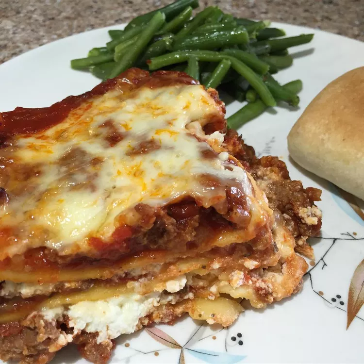

Classic Lasagna

Description
Choose hot or sweet Italian sausage for this classic lasagna. It takes some time to make, but it feeds a crowd, and the leftovers are even better the next day!
Ingredients
- 9 lasagna noodles
- 1 tablespoon olive oil
- 1 pound ground beef
- 1 pound bulk Italian sausage
- 1 (16 ounce) can sliced mushrooms, drained
- 1 teaspoon garlic salt
- 1 teaspoon dried oregano
- ½ teaspoon dried thyme
- ¼ teaspoon dried basil
- 4 (15 ounce) cans tomato sauce
- Salt and pepper to taste
- 1 (15 ounce) container ricotta cheese
- 3 large eggs, beaten
- ⅓ cup grated Parmesan cheese
- 1 pound shredded mozzarella cheese
Steps
- Preheat the oven to 350 degrees F (175 degrees C).
- Bring a large pot of lightly salted water to a boil. Add lasagna noodles and olive oil. Cook until al dente, 8 to 10 minutes; drain.
- Cook ground beef and sausage in a large pot over medium heat; drain. Stir in mushrooms, garlic salt, oregano, thyme, basil, and tomato sauce. Season with salt and pepper. Simmer for 30 minutes.
- Meanwhile, mix ricotta cheese, eggs, and Parmesan cheese together in a bowl.
- Cover the bottom of a 9x13-inch baking dish with a thin layer of sauce. Layer 3 lasagna noodles over sauce. Spread about 1/3 of the ricotta cheese mixture over the noodles. Sprinkle about 1/4 of the mozzarella cheese over the ricotta cheese mixture. Ladle about 1/3 of the meat sauce over the mozzarella cheese. Repeat layering twice more, finishing with the remaining mozzarella cheese.
- Bake in the preheated oven until the cheese melts and the sauce bubbles, about 90 minutes. Cover the lasagna with foil if the cheese begins to get too dark. Let sit for 10 to 15 minutes before serving.